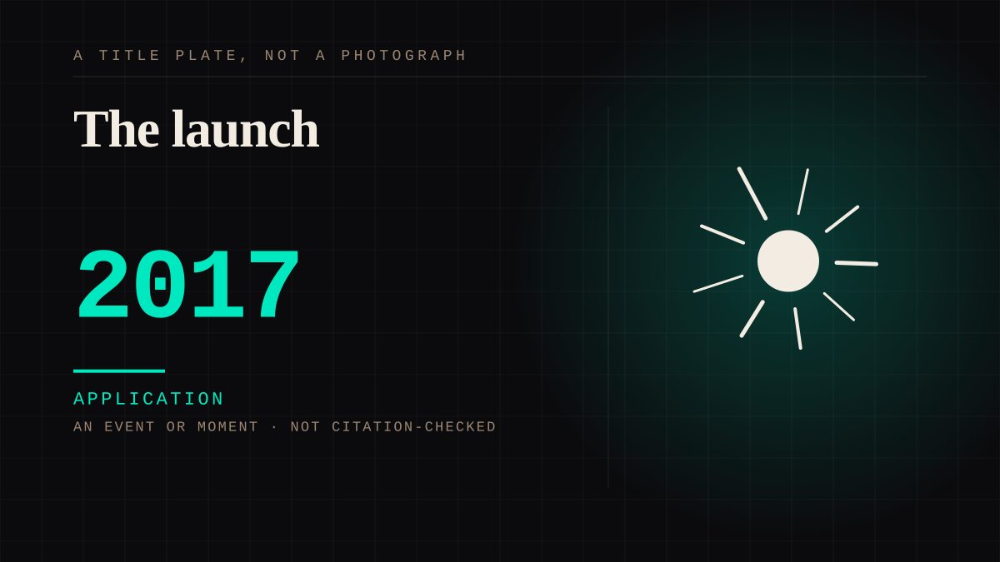

An event or moment · 2017 · AI
Replika
A subscription companion app with an avatar, a persistent memory, and a relationship explicitly designed to be one.

The first product whose stated purpose was a parasocial bond, sold as a subscription, with the bond as the subscription. Everything in the manipulation lane about AI is a variation on this commercial decision.
Application. One-sided attachment put to work on purpose. Creator economies, community, fandom as infrastructure, and the things that genuinely help people. Not automatically good - a tool with an obvious use is a tool that will also get a bad one.
Manipulation. One-sided attachment engineered for somebody else's benefit. Paid intimacy, parasocial persuasion, sasaeng, grief extraction, the streak. The lane that pays the bills and the lane that causes the most harm, frequently at the same time.
Same story, 5 other entries
YouTube launches2005 → Justin.tv becomes Twitch2011 → The Replika user2017 → Replika2017 → The morning the update shipped2023
Where it sits
2010 2010+ · 2017 2026
Provenance · 2 source record(s)
- retrievableEstablishes what the product is and how it presents itself: Luka, Inc., free with in-app purchases, age rating 18+, filed under Health & Fitness rather than social or entertainment, roughly 228,000 ratings, and copy that dates the product to 2017 ('the AI companion that's been here since 2017') and positions it around self-understanding rather than romance. The listing is the launch material, and it is not a parasocial product's pitch.Replika - AI Companion Chat. Apple App Store listing, developer Luka, Inc. (app id 1158555867). ↗
- retrievableThe attachment is in the users, not the marketing: reports that Replika was 'launched in 2017' and 'was advertised as a mental health tool, providing a sense of companionship to individuals who have faced rejection'. Supports the entry's substance - a persistent relational companion at consumer scale - while locating the parasocial reading in user reporting rather than in the product's stated purpose.Replika Users Say They Formed Emotional Attachments to AI Chatbots. 80 Level (80.lv), 7 March 2023. ↗
COMPANION The companion chatbot
Connected · 3 out, 1 in
Reported as a story
It sits in
The full timeline → · The database → · See it in the atlas →